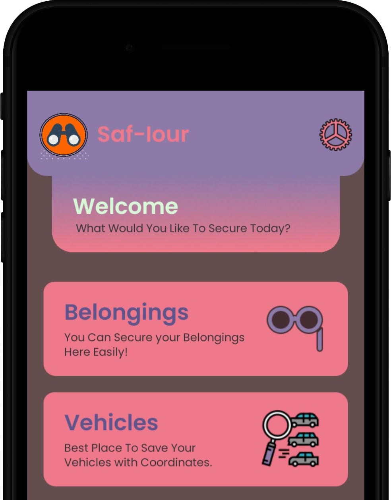

Saf-Iour
This is an application that lets user save Item and Vehicle
Location. User can create an account and save the data on the
cloud. It can also save current coordinates and navigate back
to them using Google Maps.
This app is available on Google Play Store and as a Standalone Website.

Notomatic
Notomatic is a note sharing website. This is designed for
universal use. Any school or college can take the basic
structure and add in their own notes. Students can also add in
their own notes by filling a form. These forms would be shared
to the their respective heads who further on would work upon
checking the quality and worthiness of these notes.
Notomatic Link
Notomatic Link
Tarloic
This is my portfolio website. I made it as a free time project.
Here you can explore a collection of my work and immerse
yourself in the world of creativity and innovation. This website
serves as a showcase of my skills, expertise, and passion for
Web Development. I started working on this to improve my Web
Development skills.
Tarloic Home
Tarloic Home
Telephone Directory
This is a contact log for Computers. This creates a text file
and stores contact details and this text file can be shared
across devices and can be accessed anywhere. It can search
through data and add or delete records as per the user. It can
save two Phone Numbers, Address and Aadhar Card. It also
consists of profiles such as Guest and Admin.
Telephone Directory Link
Telephone Directory Link